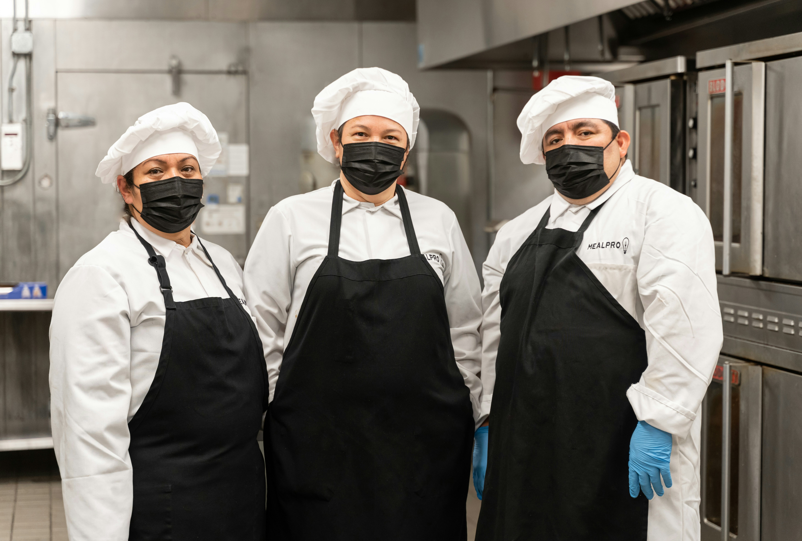

Waffle Zoa is a popular dining spot located in Ga - Sekororo, South Africa, known for serving waffles and other meals.
Based on their instargram page it is a highly-rated, local, and active establishment that attracts many visitors,
specialized in providing a unique dining experience in the Limpopo region. Its mission is to serve fresh, flavourful food and drinks to our local community from waffle burgers
to sea food and many more in a friendly relaxed setting and to be the go-to restaurant where neighbours become regulars and every visit feels like coming home
Waffle Zoa started in 2021 by Chef Thabo Semelani. Thabo grew up right here in Ga-Sekororo, Limpopo,
then flew all the way to Japan to study as a chef. There, he learned about bold flavours, making food look beautiful,
and how a good meal can bring people together. When Thabo came back home, he wanted to create something different.
That's how Waffle Zoa was born a place where you can get waffle burgers, wings, pizza, seafood, and cocktails all in one spot.
No more choosing. Just good food, cold drinks, and good vibes. Thabo is still in the kitchen most days, cooking with his own hands.
Come say hello he'd love to tell you a story or two about Japan. Thanks for supporting a local chef chasing his dream.
|
 |
Waffle Zoa your local spot for good food, cold drinks, and even better vibes. We're the kind of place where you can grab a waffle burger with one hand, share some wings with
friends, and maybe add on a pizza and seafood platter because, let's be honest,
why not? Cocktails too, obviously. We started this little restaurant because we love food and we love our community right here in Ga sekororo.
Everything we make is fresh, served with a smile, and made for real people who just want to eat well and feel good.
So pull up a chair, bring your appetite, and stay as long as you like. No fancy dress code, no fuss just great food and good company.
Welcome to Waffle Zoa we're happy you're here.
Waffle Zoa is here to serve fresh, flavourful food with a smile. We bring waffle burgers, wings, pizza, seafood, and cocktails to Ga-Sekororo, Limpopo, because we believe you shouldn't have to choose.
Every customer who walks in becomes family. We cook with passion and serve with heart.
We want to become the most loved local restaurant in Limpopo the place where neighbours become regulars.
As we grow, we promise to keep our small-town soul. Above all, we want to keep Chef Thabo's dream alive, one plate at a time.